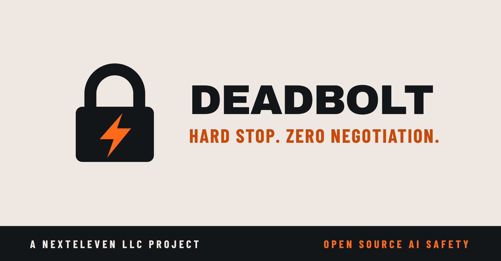

AI agents can write files, call tools, spend money and reach other systems. Deadbolt gives the trusted software around an agent a place to say allow or stop before each protected action runs.
Meet DeadBolt on Product Hunt. Follow the launch and share your feedback.
Designed, built and released under Apache-2.0 by NextEleven LLC. Open source, without a license fee or an intention to profit from Deadbolt itself.

01 / THE CONTROL POINTINTENT ≠ PERMISSION
WATCH / LEARN / VERIFY
See the boundary hold.
Start with the overview, then follow the complete developer walkthrough—from installation and integration to approval, revocation, recovery and real tool execution inside Harness.
Overview: the execution boundary, exact-action approval, actual Harness terminal and web UI, and how to start a bounded pilot.
English captions are always visible. No sound is needed. Narration uses the AI-generated Cedar voice. Harness runs its actual optimized binary with a deterministic local demo provider; the dispatcher and file-effect checks are real. Slides explain the system; they are presentation assets.
Stable: v1.0.3. Published prerelease: v1.1.0-rc.1. Exact-action approval, scoped admission credentials and the installable Python client are now available in the prerelease downloads. The videos were recorded before that publication; their candidate-status narration describes the recording date. Harness integration remains a separately reviewed pull request. Choose a release and inspect the evidence below.
THE PROBLEM IS THE HANDOFF FROM INTENT TO EFFECT↓
01 / WHY NOW
The faster the agent, the more important the boundary.
Teams are giving agents access to tools that change real state. A prompt can ask for restraint; it cannot enforce a stop if the executor keeps running. Deadbolt puts a local decision in the dispatch path, where a denied action can be withheld before the tool body starts.
It is designed for the moment after an agent proposes an action and before trusted code performs it. Policy, a short-lived lease, one-shot operator approval and revocation all meet at that point.
02 / THE MECHANISM
One gate. Every protected dispatch.
01
Agent proposes
A tool call, spawn, destination or spend-bearing action.
→
02
Deadbolt decides
Trusted dispatcher checks lease, policy and operator state.
→
03
Executor acts—or stops
Only an explicit allow reaches the protected body.
ALLOW → execute nowDENY / ERROR → no protected dispatch
This is an integration boundary, not a magic network shield. The trusted executor must route every protected action through it and must not cache an earlier allow. Pause and kill affect subsequent admission; they do not cancel a tool body already running.
03 / CHOOSE YOUR PATH
Start where your responsibility sits.
FOR DEVELOPERS & ENGINEERS{ }
Put a real stop in the dispatch path.
Review the trust boundary, install the v1.0.3 package, run the local file-effect evaluation and choose embedded Rust, local HTTP or a trusted stdio MCP proxy.
An agent can make a good recommendation and still have too much power. Deadbolt gives the team a technical point where permissions can be limited and later actions can be stopped by an operator.
Download the archive and its checksum for your platform. Verify it, extract it and run deadbolt drill. A prebuilt binary needs no Rust toolchain, model key, cloud account or database server.
macOS arm64 and Intel archives are signed and notarized. Linux and Windows binaries are unsigned.
Build in: call the Rust library immediately before a protected body.
Bolt on: use a trusted Python or Node dispatcher with the local HTTP service, or route protected stdio MCP tool calls through the proxy.
Prove the effect: run the first evaluation, confirm allowed work creates its file and denied work does not, then repeat that test inside your application.
Stable v1.0.3 provides Python and Node clients as source files; v1.1.0-rc.1 also publishes a Python wheel. Use the linked source and release instructions; this page does not promise a crates.io, PyPI or npm installation. Set an explicit policy: an unset policy is open. Keep operator authority out of agent-controlled code.
04 / EXECUTIVE BRIEF
A kill switch is only useful if it is wired to the machinery.
Picture an agent that can update customer records, move money or deploy code. If a human says “stop,” a chat message is a request. A gated dispatcher is a control: the next protected action must be admitted, and a revoked identity is denied.
Deadbolt can narrow the set of permitted tools and destinations, set caller-supplied spend caps, require a one-time human approval for classified irreversible actions, and record structured decisions. Teams choose what to protect and integrate the gate into the code that actually performs those actions.
THE BUSINESS QUESTIONWhen an agent is wrong, what can it still do before a person takes control?
05 / THE FAILURE MODES
The incidents to design for before they occur.
01
Runaway permissions
An agent with broad tool access can act beyond the task it was given. Put an explicit allow-list at the action boundary and deny off-policy calls.
02
Compounding mistakes
A bad plan can repeat across many calls. Short leases and operator pause or kill can prevent subsequent protected actions for an identity and registered descendants.
03
Cost and destination drift
Agents can keep spending or reach unplanned destinations. Trusted callers can supply spend and destination context for policy checks; Deadbolt does not measure bills or intercept traffic itself.
04
Approval theater
A prompt saying “ask first” is not an approval system. Deadbolt can require a one-shot operator grant for tools the team classifies as irreversible.
These are engineering scenarios, not claims that Deadbolt has prevented a customer incident. The protection is only as complete as the actions routed through the gate.
The v1.0.3 release includes source, native archives for four OS/architecture targets, checksums, reproducible evaluation material and an Apache-2.0 license. Its published Apple Silicon archive passed eleven local file-effect checks from the extracted ZIP. Linux, macOS and Windows CI plus the selected Hermes MCP route passed on the reviewed source.
That is a tested release and a reproducible demonstration. It is not an independent security certification, a universal containment guarantee, or proof of adoption in someone else’s production system.
Review the proposed content and context, consume a grant once, and refuse changed or replayed requests. Scope workload admission credentials separately from operator controls. These features are included in v1.1.0-rc.1.
Download a native archive and the Python wheel from the prerelease. Follow runnable Rust, Python, Node, MCP and optional OpenAI Agents SDK examples. The wheel does not bundle the executable. No crates.io, PyPI or npm publication is promised.
The separately reviewed Harness update rechecks immediately before the protected effect. Declined review does not consume a one-shot grant. Changes to policy or leases during review are covered by regressions. This integration is not yet merged.
Published prerelease source: 52a2085. All 21 release payloads were downloaded and checked against the published SHA256SUMS. Both macOS archives are signed and notarized; Linux and Windows binaries are unsigned. Source and packaged acceptance checks passed on the tagged source. Download the prerelease and inspect its validation. Stable v1.0.3 remains available above.
Local verification at the pinned revisions: 96 DeadBolt Rust tests, 19 installed-SDK checks, and 825 Harness workspace tests. The walkthrough contains 14 candidate checks, the 11-case file-effect evaluation, and actual Harness allow/deny effects. Passing tests support these specific checks; they do not establish universal containment or certification. Pinned revisions and boundaries.
07 / WHY WE RELEASED IT
Built in the open for the people carrying the risk.
NextEleven LLC designed, developed and built Deadbolt, then released it under Apache-2.0 so teams can inspect it, adapt it and use it without a license fee. We do not intend to profit from Deadbolt itself. The aim is a practical contribution to safer AI in business and more confidence for the engineers asked to put agents into real systems.
Page and walkthrough reviewed October 10, 2026. Open source is a starting point for scrutiny, not a substitute for it. We welcome careful evaluation, issues, improvements and honest reports from the field.